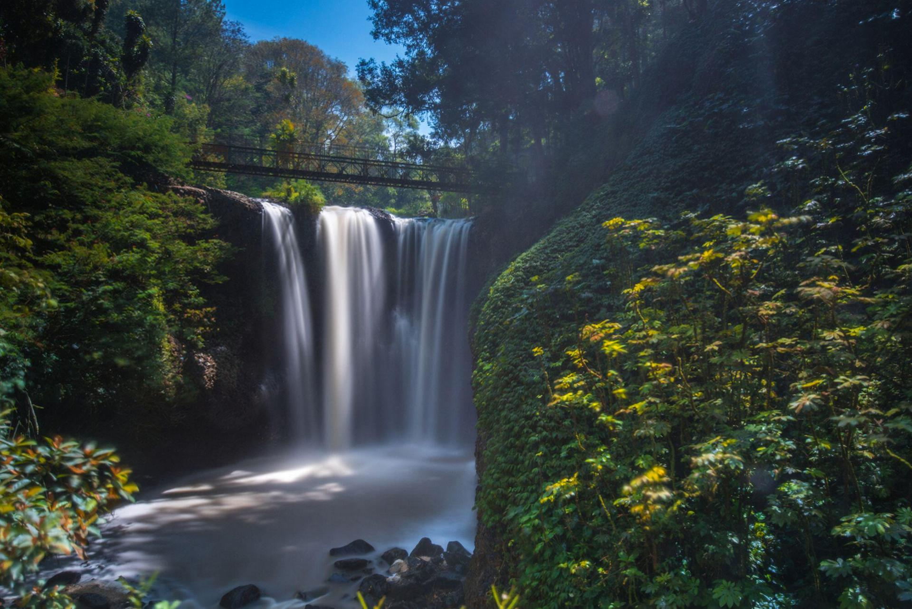
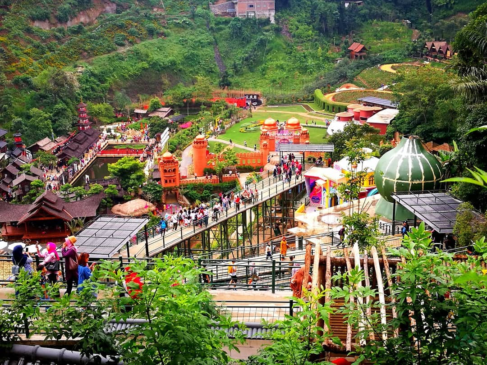
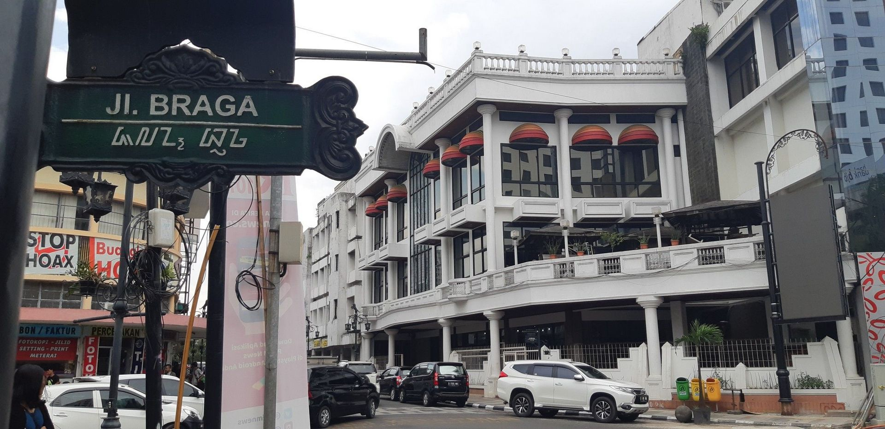
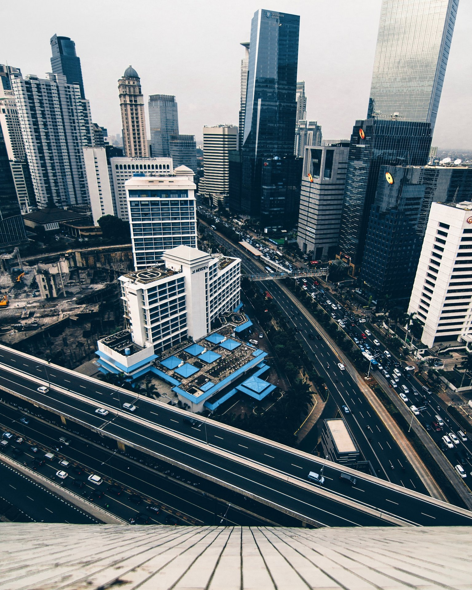
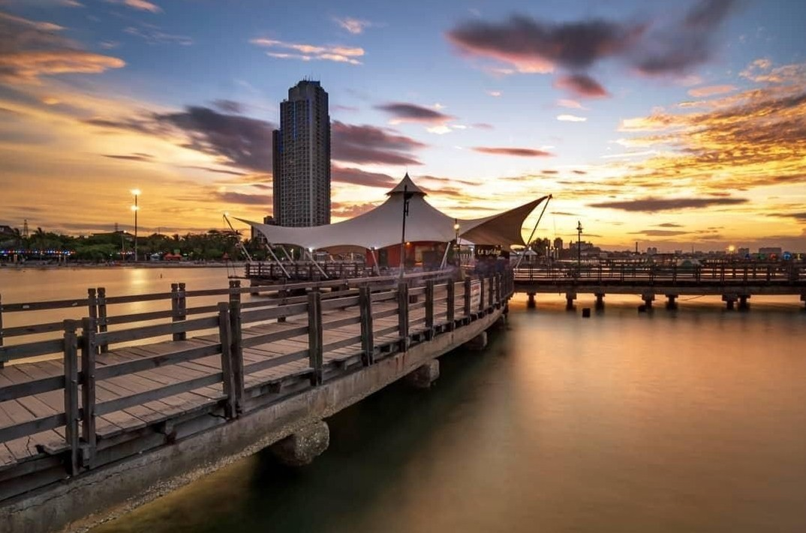
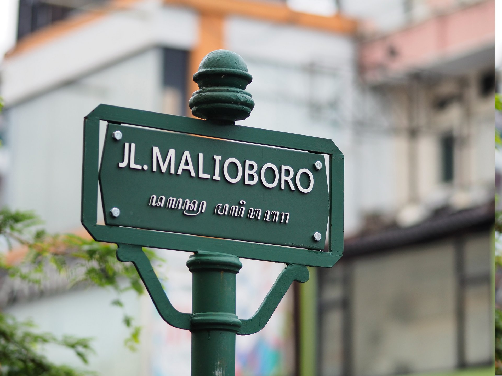

Selain itu Bandung dahulunya disebut juga dengan Paris van Java karena keindahannya. Selain itu kota Bandung juga dikenal sebagai kota belanja, dengan mall dan factory outlet yang banyak tersebar di kota ini, dan saat ini berangsur-angsur kota Bandung juga menjadi kota wisata kuliner.
Bandung merupakan kota terpadat kedua di Indonesia setelah Jakarta. Terletak 140 km di sebelah tenggara Jakarta, Bandung merupakan kota terbesar di bagian selatan pulau Jawa.
Selain itu Bandung juga memiliki banyak makanan khas dari daerahnya sendiri, disini ada beberapa makanan khasnya
Tempat wisata

Taman Hutan Raya Ir. H. Djuanda

The Great Asia Africa

Braga

Kota Jakarta
Daerah Khusus Ibukota Jakarta (DKI Jakarta) adalah ibu kota negara dan kota terbesar di Indonesia. Jakarta merupakan satu-satunya kota di Indonesia yang memiliki status setingkat provinsi. Jakarta terletak di pesisir bagian barat laut Pulau Jawa.
Dahulu pernah dikenal dengan beberapa nama di antaranya Sunda Kelapa, Jayakarta, dan Batavia. Di dunia internasional Jakarta juga mempunyai julukan J-Town, atau lebih populer lagi The Big Durian karena dianggap kota yang sebanding New York City (Big Apple) di Indonesia.
Selain itu Jakarta juga memiliki banyak makanan khas dari daerahnya sendiri, disini ada beberapa makanan khasnya
Tempat wisata
Monumen Nasional
Pulau Seribu

Ancol

Kota Yogyakarta
Yogyakarta juga merupakan Ibukota Daerah Istimewa Yogyakarta di Jawa yang terkenal dengan Istana Sultan Yogyakarta atau Keraton Yogyakarta dimana keluarga Sultan masih tinggal di istana tersebut sampai sekarang .
Kota ini disebut unik karena kita bisa melihat berbagai tradisi Jawa yang begitu melekat di kota ini dan masyarakatnya, seperti batik (kain dengan corak khusus yang dibuat dengan tangan (dilukis dan dicetak), kerajinan perak, pertunjukan wayang, musik tradisional atau gamelan, bahkan makanan khas Yogyakarta yang disebut Gudeg! yaitu sayuran yang terbuat dari buah nangka muda.